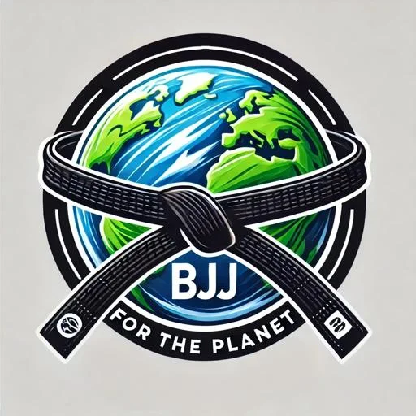
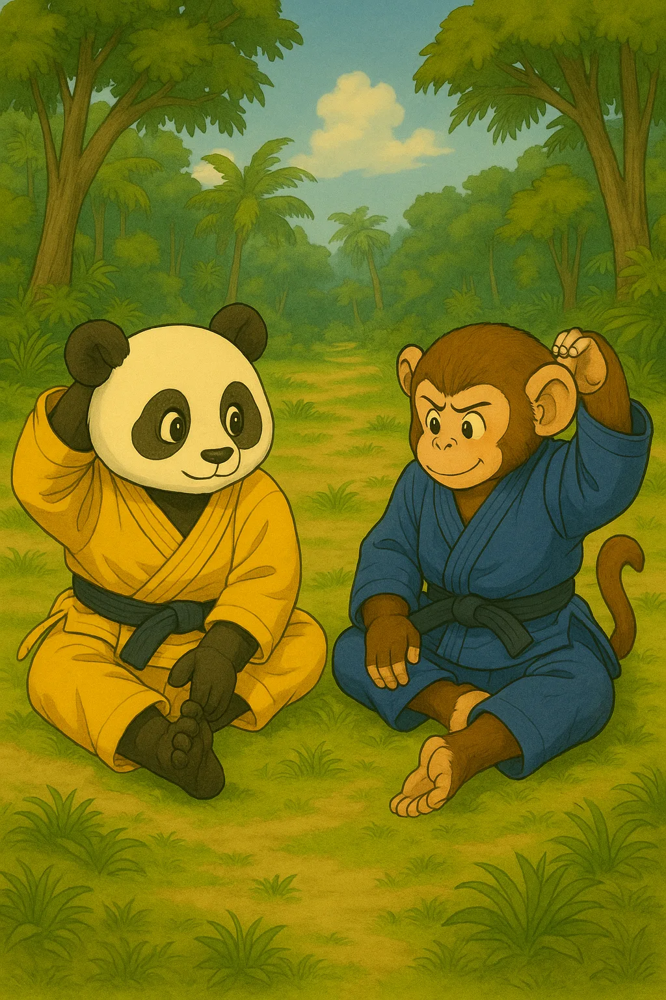

Empowering Grapplers, Protecting the Planet.
Scroll ↓
BJJ For The Planet is a charity that uses Brazilian Jiu-Jitsu to host retreats and build apps that support worthy causes. Do jiu-jitsu, and do good.
Jiu-jitsu as a force for good.
"To protect vulnerable ecosystems and the people who rely on them, through the unity of Brazilian Jiu-Jitsu." The five things we hold ourselves to, laid out the way a grappler actually earns them.
Honor
Respect for the sport, the people who teach it, and the communities we visit.
Discipline
The same consistency it takes to earn a belt, applied to showing up for a cause.
Charity
Every retreat, every match, every donation is pointed at someone who needs it more.
Community
Jiu-jitsu's global network of gyms and athletes, turned into a network for giving back.
Stewardship
Protecting the ecosystems and people that host the communities we train alongside.
Train somewhere that needs it.
We partner with organizations like Guardian to visit communities that are giving back locally — then bring grapplers from around the world to train, volunteer, and help fund what comes next.
Máncora, Peru
Our first retreat partnered with Guardian's academy in Máncora, a coastal city where roughly 30% of the 15,000 residents are under 15 — many with little access to structured youth programs. Guardian Peru gives those kids free jiu-jitsu training year-round; we brought grapplers down to train alongside them, volunteer, and support the program directly.
- Daily training with Guardian's Peru academy and international participants
- Volunteer work: BJJ and English instruction, cultural exchange, beach cleanup
- Surfing, volleyball, and the Peruvian coast in downtime
- Lodging and logistics coordinated by BJJ For The Planet
Read more about our host on the ground under Partners & Donors.

IllustrationWhat's next
We're planning future retreats but haven't locked a location or date yet. If you want to train somewhere that matters, get on the list — we'll email you the moment it's official.
Register for UpdatesReal photos from Máncora are on the way — this section will get a full gallery as soon as they're organized. For now, this illustration captures the spirit rather than stock filler.
CharitySpar — fight for your cause.
Two jiu-jitsu athletes each nominate a charity, then spar. Only the loser pays — and it goes to the winner's chosen charity. It turns every roll at open mat into a reason to give.
Nominate a charityEach athlete picks the cause they're rolling for.
SparSettle it on the mats — friendly match, real stakes.
Loser pays, winner's cause winsThe loser donates to the winner's charity of choice.
We don't do this alone.
BJJ For The Planet exists because these organizations put their name, their gyms, and their gear behind the same idea — jiu-jitsu can do more than build better grapplers.
A 501(c)(3) offering free jiu-jitsu scholarships to underserved youth worldwide. Guardian's academy in Máncora, Peru — one of four it now runs along the coast — hosted our inaugural retreat and gives local kids year-round access to training, mentorship, and a safe place to be a kid.
guardiangym.org →The charity-sparring app we built in-house. Every match is a fundraiser — athletes nominate a cause, spar, and the loser's donation goes to the winner's charity of choice. Same mission, different mat.
charityspar.com →A Brazilian Jiu-Jitsu gear brand that has donated gis and apparel directly to support athletes who couldn't otherwise afford them — including gear that's outfitted kids training through our retreat program.
elitesports.com →Ryan DeRobertis
Founder — trains at NorthStarMMA under Jackson Galka
BJJ For The Planet started as a passion project — one hobbyist grappler's way of giving back to a sport that changed his life. The idea was simple: take the discipline, community, and network that jiu-jitsu builds, and point it at causes that need it.
What started as one idea has grown into retreats, a gi donation pipeline, and an app — with more in the works. This is still early. If you want to be part of building it, there's room.
Follow along, or reach out directly.
Whether it's the next retreat, a gi donation, or a partnership idea — this is where to find us.
@bjjfortheplanet
Retreat updates, training clips, and behind-the-scenes — this is where we post first.
Follow on Instagram- EmailBjjfortheplanet@gmail.com
- Phone(703) 946-5237
- Based inPhiladelphia, PA (Roxborough)
Prefer to support financially? Donations cover training gear and retreat costs for kids who couldn't otherwise afford it. We're a registered 501(c)(3) — you'll get a receipt. Donate via PayPal →